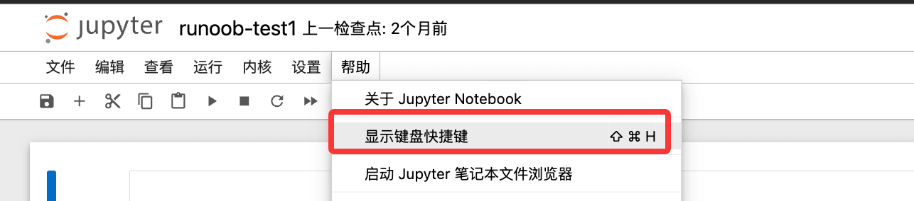
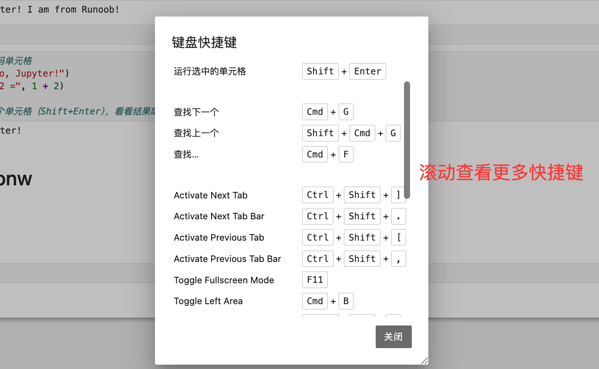

Jupyter Notebook よく使うショートカットキーと実用テクニック
Jupyter Notebook は、データサイエンスと機械学習の分野で最も人気のあるインタラクティブ開発環境です。そのショートカットキーとテクニックをしっかり習得すれば、日常の開発効率を大幅に向上させることができます。
ヘルプメニューをクリックするとショートカットキーを確認できます：


この記事のすべてのショートカットキーはWindows/Linuxを基準にしています。Macユーザーは
Ctrlに置き換えCmd、Altに置き換えてくださいOption。
2つの操作モード
Jupyter Notebook には2つのモードがあります。すべてのショートカットキーは現在のモードに依存します。これは初心者が最も見落としがちなポイントです：
| モード | Cellの枠の色 | 入り方 | 機能 |
|---|---|---|---|
| コマンドモード（Command Mode） | 青 | 按 Escまたは Cell の左側の空白領域をクリック |
Cell の管理操作（追加、削除、移動など）を行う |
| 編集モード（Edit Mode） | 緑 | 按 Enterまたは Cell 内部をダブルクリック |
Cell 内でコードやテキストを記述・修正する |
簡単な覚え方：緑 = 入力・編集が可能、青 = Cell の管理が可能。編集モードに入る前に、まずEscで終了し、次にEnterで入る。この習慣を身につけると、多くの誤操作を防げます。
Cellを実行するショートカットキー（共通）
以下の3つのショートカットキーは両方のモードで使用でき、最も頻度の高い操作です。必ず覚えておきましょう：
| ショートカットキー | 機能 | 使用シーン |
|---|---|---|
Shift + Enter |
現在の Cell を実行し、自動的に次の Cell に移動する | 最も一般的で、コードを順に下方向へ実行する |
Ctrl + Enter |
現在の Cell を実行し、現在の Cell に留まる | 同じコードを繰り返しテストするときに使用 |
Alt + Enter |
現在の Cell を実行し、下に新しい Cell を挿入する | 実行しながら下にコードブロックを追加していくときに使用 |
コマンドモードのショートカットキー（青い枠）
按 Escコマンドモードに入ると、以下のショートカットキーが使用できます：
1、Cellの挿入と削除
| ショートカットキー | 機能 |
|---|---|
A |
現在の Cell の上に新しい Cell を挿入（Above） |
B |
下に新しい Cell を挿入（Below）（D を2回押す） |
D, D現在の Cell を削除 |
削除を取り消す（削除した Cell を復元する） |
Z |
現在の Cell を切り取る |
X |
現在の Cell をコピー |
C |
現在の Cell の下に Cell を貼り付け |
V |
現在の Cell の上に Cell を貼り付け |
Shift + V |
2、Cellタイプの切り替え |
2、Cellタイプの切り替え
ショートカットキー
| 切り替え先 | 用途 | Code（コード） |
|---|---|---|
Y |
Python コードを記述して実行 | Markdown（マークダウン言語） |
M |
フォーマット済みドキュメント、見出し、説明文を記述 | Raw（生テキスト） |
R |
テキストをそのまま出力し、実行もレンダリングもしない | Markdown 見出しレベル H1 〜 H6 |
1 ~ 6 |
Cell を対応するレベルの見出しにすばやく設定（自動的に Markdown モードに切り替わります） | 3、Cellの選択と結合 |
3、Cellの選択と結合
| 機能 | 上の Cell を選択 |
|---|---|
↑ / K |
下の Cell を選択 |
↓ / J |
上方向に複数の Cell を連続選択 |
Shift + ↑ / Shift + K |
下方向に複数の Cell を連続選択 |
Shift + ↓ / Shift + J |
選択した複数の Cell を1つに結合 |
Shift + M |
4、出力と表示の制御 |
4、出力と表示の制御
| 機能 | 現在の Cell の出力結果を折りたたむ/展開する |
|---|---|
O |
現在の Cell の出力領域のスクロールモードを切り替え（出力内容が長いときに使用） |
Shift + O |
現在の Cell の行番号を表示/非表示 |
L |
Cell 内でテキストを検索・置換 |
F |
5、カーネルとインターフェース操作 |
5、カーネルとインターフェース操作
| 機能 | （I を2回押す） |
|---|---|
I, I現在実行中の Cell を中断（Ctrl+C に相当） |
（0 を2回押す） |
0, 0カーネルを再起動（実行済みのすべての変数がクリアされます。 |
注意して使用してくださいショートカットキーのヘルプパネルを開く（利用可能なすべてのショートカットキーを表示）） |
H |
コマンドパレットを開き、すべての Jupyter 機能を検索できる |
P |
ページを下にスクロール |
Space |
ページを上にスクロール |
Shift + Space |
Notebook を保存 |
S / Ctrl + S |
編集モードのショートカットキー（緑の枠） |
編集モードのショートカットキー（緑の枠）
按 Enter1、コード編集
1、コード編集
| 機能 | コードの自動補完（関数名/変数名の一部を入力後に Tab で補完） |
|---|---|
Tab |
カーソル位置の関数のパラメータ説明を表示（ドキュメントのヒントがポップアップ表示され、1回押すと簡易表示、2回押すと完全なドキュメントを表示） |
Shift + Tab |
現在の行または選択した複数行のコードをコメントアウト/コメント解除 |
Ctrl + / |
現在の行全体を削除 |
Ctrl + D |
カーソル位置で現在の Cell を2つの Cell に分割 |
Ctrl + Shift + - |
元に戻す（直前の編集を復元） |
Ctrl + Z |
やり直す（元に戻すのをキャンセル） |
Ctrl + Y |
現在の Cell 内のすべての内容を全選択 |
Ctrl + A |
Cell の内容の先頭に移動 |
Ctrl + Home |
Cell の内容の末尾に移動 |
Ctrl + End |
単語単位でカーソルを移動（前/次の単語へすばやく移動） |
Ctrl + ← / Ctrl + → |
2、編集モードからコマンドモードに戻る |
2、編集モードからコマンドモードに戻る
| 機能 | 作用 |
|---|---|
Esc |
編集モードを終了し、コマンドモードに戻る（セルの枠線が青くなる） |
Ctrl + M |
Esc と同じ、編集モードを終了 |
マジックコマンド（Magic Commands）
マジックコマンドは Jupyter に組み込まれた特別な命令で、%（単行）または%%（セル全体）で始まり、計測、デバッグ、ファイル操作などの一般的なタスクを実行するために使われます。ライブラリをインストールせずに使用できます。。
1、コードの計測
例
%timeit [x**2 for x in range(1000)]
# 出力例：98.3 µs ± 1.2 µs per loop (mean ± std. dev. of 7 runs, 10000 loops each)
# %%time：セル全体のコードを1回だけ計測する（時間のかかる完全なフローをテストするのに適しています）
%%time
import time
data = [x**2 for x in range(100000)]
time.sleep(1)
# 出力例：
# CPU times: user 45.2 ms, sys: 8.1 ms, total: 53.3 ms
# Wall time: 1.05 s
2、グラフのインライン表示
例
# 通常はNotebookの最初のセルに置き、Notebook全体で一度だけ実行します。
%matplotlib inline
import matplotlib.pyplot as plt
import numpy as np
x = np.linspace(0, 2 * np.pi, 100)
plt.plot(x, np.sin(x))
plt.title('正弦波')
plt.show()
# %matplotlib notebook：インタラクティブなグラフを有効にし、拡大・移動が可能（inline とは同時に使えません）
# %matplotlib notebook
3、変数の表示と管理
例
%who
# 出力例：data plt x
# %whos：%who より詳細で、変数の型と値も表示します
%whos
# 出力例：
# Variable Type Data/Info
# ----------------------------
# x ndarray 100: [0. 0.06 ... 6.28]
# data list n=100000
# %reset：すべての変数をクリアします（確認プロンプトが表示され、計算を最初からやり直すときに適しています）
%reset
# %reset -f：確認プロンプトを表示せずにすべての変数を強制クリアします（-f は force を意味します）
%reset -f
4、ファイルとパス操作
例
%pwd
# 出力例：'/home/user/notebooks'
# %ls：現在のディレクトリ内のすべてのファイルを一覧表示します（Windows ユーザーは %ls または !dir を使う必要がある場合があります）
%ls
# 出力例：data.csv model.py notebook.ipynb
# %%writefile：セル全体の内容を指定したファイルに書き込みます（スクリプトファイルをすばやく作成するために使われます）
%%writefile hello.py
def greet(name):
print(f"你好，{name}！")
greet("世界")
# 実行すると、現在のディレクトリに hello.py ファイルが生成され、内容はセル内のコードそのものになります。
# %run：外部のPythonスクリプトファイルを実行し、その変数を現在の名前空間にインポートします。
%run hello.py
# 出力：こんにちは、世界！
# %load：外部スクリプトファイルの内容を現在のセルに読み込みます（自動実行はされず、コードの読み込みのみ）
%load hello.py
5、システムコマンドの実行
例
!pip install pandas # Pythonパッケージのインストール
!pip list # インストール済みパッケージの一覧を表示
!python --version # Pythonのバージョンを確認
# コマンドの出力結果をPythonの変数として保存することもできます。
files = !ls -1 # ls コマンドを実行し、結果を files 変数に代入します。
print(files) # files はリストで、各ファイル名が要素です。
6、履歴の表示とデバッグ
例
%history
# -n を付けると行番号を表示し、-l 5 を付けると最新の5件だけを表示します。
%history -n -l 5
# %debug：コードでエラーが発生した後、次のセルで %debug を実行すると、対話型デバッグモードに入ります。
# デバッグモードでは変数名を入力して値を確認でき、 q を入力するとデバッグを終了します。
# 例えば、エラーになるコードを実行した後：
%debug
7、特殊コンテンツのレンダリング
例
%%html
<h3 style="color: steelblue;">これは HTML 見出しです</h3>
<p style="font-size: 16px;">Notebook内でHTMLコンテンツを直接レンダリングできます。</p>
# %%latex：セルの内容をLaTeX数式としてレンダリングします（数学の数式を書くためによく使われます）
%%latex
$$E = mc^2$$
$$\int_0^\infty e^{-x^2} dx = \frac{\sqrt{\pi}}{2}$$
実行進捗をリアルタイムで確認する
大量のデータを処理するときや長時間のループ中は、進捗をリアルタイムで確認することが非常に重要です。以下はよく使われる進捗表示の方法です。
1、tqdm プログレスバー（推奨）
tqdm は最もよく使われるプログレスバーライブラリで、ループ、Pandas、さまざまなJupyter環境に対応しています。インストールコマンド：
pip install tqdm
例
import time
# 基本的な使い方：反復可能オブジェクトを tqdm() で囲むだけで、自動的にプログレスバーが表示されます。
for i in tqdm(range(100)):
time.sleep(0.05) # 時間のかかる操作をシミュレート
# 出力：プログレスバー、完了率、経過時間、予測残り時間が表示されます。
# enumerate と組み合わせて使用
data = list(range(50))
for i, item in enumerate(tqdm(data, desc="データ処理中")):
# desc パラメータはプログレスバー左側のラベル文字を設定します。
time.sleep(0.05)
# 手動で進捗を制御する（総量が不明なシーンに適しています）
with tqdm(total=100, desc="ダウンロード進捗") as pbar:
for chunk in range(10):
time.sleep(0.1)
pbar.update(10) # 10単位ずつ進捗を更新します。
pbar.set_postfix({"chunk": chunk}) # プログレスバーの右側に追加情報を表示します。
例
import pandas as pd
from tqdm.notebook import tqdm
tqdm.pandas() # Pandas統合を有効にするには、一度だけ実行します。
df = pd.DataFrame({'value': range(1000)})
# 通常の apply の代わりに progress_apply を使うと、自動的に進捗が表示されます。
result = df['value'].progress_apply(lambda x: x ** 2)
2、display + clear_output による動的な出力更新
tqdm をインストールしたくない場合は、IPython 組み込みのclear_outputを使って動的な更新を実現できます：
例
import time
total = 50
for i in range(total):
time.sleep(0.1)
# clear_output(wait=True)：前回の出力をクリアします。wait=True は新しい内容が来るまでクリアを待つことを意味し、
# ちらつきを防ぎます。注意：これにより現在のセルのすべての出力がクリアされます。
clear_output(wait=True)
# 手動で簡単なテキストプログレスバーを作成します。
done = int((i + 1) / total * 30) # 完了したマス数を計算します（全30マス）
bar = '█' * done + '░' * (30 - done) # █ は完了、░ は未完了を表します。
pct = (i + 1) / total * 100
print(f"進捗：[{bar}] {pct:.1f}% ({i+1}/{total})")
print("✅ すべて完了！")
3、グラフの進捗をリアルタイムに描画
モデル学習などの場面では、一定時間ごとにグラフを動的に更新し、指標の変化傾向をリアルタイムで確認できます：
例
import matplotlib.pyplot as plt
from IPython.display import clear_output, display
import numpy as np
import time
losses = [] # 各ステップの損失値を保存し、学習プロセスをシミュレートします。
for step in range(50):
# 学習シミュレーション：徐々に減少する損失値を生成します。
loss = 1 / (step + 1) + np.random.uniform(0, 0.05)
losses.append(loss)
# 5ステップごとにグラフを更新し、更新が頻繁になりすぎないようにします。
if (step + 1) % 5 == 0:
clear_output(wait=True)
fig, ax = plt.subplots(figsize=(8, 4))
ax.plot(losses, color='steelblue', linewidth=2)
ax.set_title(f'トレーニング進捗（Step {step + 1}/50）')
ax.set_xlabel('Step')
ax.set_ylabel('Loss')
ax.grid(True, alpha=0.3)
plt.tight_layout()
plt.show() # clear_output の後に show を呼び出すと、グラフは同じ位置で更新されます。
time.sleep(0.1)
print("トレーニング完了！最終Loss：", f"{losses[-1]:.4f}")
ドキュメントとコードを確認するテクニック
1、関数ドキュメントをすばやく表示
例
import numpy as np
np.array?
# np.array のパラメータ説明や機能説明がポップアップ表示されます。
# 方法2：関数名の後に ?? を付けると、完全なドキュメントがポップアップ表示されます。ソースコードも含まれます（ソースが取得できる場合）
np.array??
# 方法3：関数の括弧内で Shift + Tab を押します。
# 例えば np.linspace( と入力した後（括弧内）に Shift + Tab を押すと、パラメータのヒントが表示されます。
# Shift + Tab を2回続けて押すと、より完全なドキュメントが表示されます。
# 方法4：help() 関数を使用します（出力はより完全ですが、ポップアップではなく出力領域に表示されます）
help(np.array)
2、display を使って複数の出力結果を表示
Jupyter はデフォルトでは各セルで最後の式の値だけを表示します。display()を使うと、1つのセルで複数の結果を出力できます：
例
from IPython.display import display
df1 = pd.DataFrame({'A': [1, 2, 3], 'B': [4, 5, 6]})
df2 = pd.DataFrame({'X': [7, 8, 9], 'Y': [10, 11, 12]})
# display を使わない場合、最後のDataFrameだけが表示されます。
# df1 # 表示されません
# df2 # これだけが表示される
# display() を使用すると、複数のテーブルを同時に表示でき、フォーマットも美しいです
display(df1)
display(df2)
例
from IPython.core.interactiveshell import InteractiveShell
InteractiveShell.ast_node_interactivity = "all" # デフォルトは "last_expr" ですが、"all" に変更すると
# Cell 内の各式の結果が自動的に出力されます
1 + 1 # 出力 2
2 + 2 # 出力 4（デフォルトではこの行は出力されません）
"hello" # 出力 'hello'
3、不要な出力を抑制
例
import numpy as np
# 問題：plt.plot() はグラフを表示すると同時に、余分なオブジェクトの説明を出力します。例：
# [<matplotlib.lines.Line2D object at 0x7f3b1234>]
# 解決方法：文の末尾にセミコロン（;）を追加すると、最後の式の出力を抑制できますが、グラフの表示には影響しません
plt.plot(np.sin(np.linspace(0, 2*np.pi, 100)));
# セミコロンを追加すると、グラフは正常に表示されますが、余分なオブジェクトの説明は表示されません
その他の実用テクニック
1、変数の中間値を確認する（コード実行を中断しない）
例
# 中間結果を変数に代入すると同時に、行全体を括弧で囲んで出力させます
import numpy as np
# 通常の書き方（result の値は表示されません）
result = np.array([1, 2, 3]) * 2
# 括弧を付けた書き方（代入と同時に result の値を出力します）
(result := np.array([1, 2, 3]) * 2) # Python 3.8+ のセイウチ演算子を使用した書き方
# 出力：array([2, 4, 6])
# またはより簡単に：代入後に改行して変数名を書くだけです
result = np.array([1, 2, 3]) * 2
result # Jupyter は最後の式の値を自動的に表示します
2、前回の出力結果を参照する
例
# _ ：前の Cell の出力結果
# __ ：前々回の Cell の出力結果
# _3 ：3 番目の Cell（Out
# 例：
1 + 1
# Out[1]: 2
_ # 前の出力を参照、値は 2
# Out[2]: 2
_ * 10 # 前の出力を使用して計算を続行
# Out[3]: 20
_3 + 5 # Out
# Out[4]: 25
3、Notebook でリッチテキストコンテンツを表示する
例
# Markdown 形式のテキストをレンダリング
display(Markdown("## これは見出し\n\n**太字テキスト**、*斜体テキスト*、`コード"))
# HTML をレンダリング
display(HTML("<span style='color:red; font-size:20px'>赤い大きな文字</span>"))
# ネットワーク画像を表示（画像 URL を渡す）
display(Image(url="https://www.runoob.com/images/runoob-logo.png", width=200))
# ローカル画像を表示（ローカルファイルのパスを渡す）
# display(Image(filename="./chart.png"))
4、Cell に計時ラベルを追加（出力に自動で所要時間を表示）
例
# pip install jupyter-contrib-nbextensions
# 簡単な方法：デコレータまたはコンテキストマネージャでタイミングロジックをカプセル化し、任意のコードブロックで使用します
import time
from contextlib import contextmanager
@contextmanager
def timer(label="処理時間"):
start = time.time()
try:
yield
finally:
elapsed = time.time() - start
print(f"⏱ {label}：{elapsed:.3f} 秒")
# 使用法：任意のコードブロックを with timer() で囲むと、実行完了後に自動的に処理時間が出力されます
with timer("データ処理"):
data = [x ** 2 for x in range(1000000)]
# 出力：⏱ データ処理：0.087 秒
5、現在の Notebook のすべてのショートカットキーをすばやく表示
コマンドモード（青い枠線）で押すかH、またはメニューからHelp → Keyboard Shortcuts選択すると、完全なショートカットキーヘルプパネルを開いて、いつでも利用可能なすべての操作を確認できます。
よく使うショートカットキー早見表
| 操作 | ショートカットキー | 対象モード |
|---|---|---|
| Cell を実行して次へ移動 | Shift + Enter |
共通 |
| Cell を実行してその場に留まる | Ctrl + Enter |
共通 |
| Cell を実行して下に新しいセルを作成 | Alt + Enter |
共通 |
| 編集モードに入る | Enter |
コマンドモード |
| 編集モードを終了 | Esc |
編集モード |
| 上に Cell を挿入 | A |
コマンドモード |
| 下に Cell を挿入 | B |
コマンドモード |
| Cell を削除 | D, D |
コマンドモード |
| Cell の削除を元に戻す | Z |
コマンドモード |
| コード Cell に切り替え | Y |
コマンドモード |
| Markdown Cell に切り替え | M |
コマンドモード |
| 選択した複数の Cell を結合 | Shift + M |
コマンドモード |
| カーネルを中断（実行を停止） | I, I |
コマンドモード |
| カーネルを再起動 | 0, 0 |
コマンドモード |
| ショートカットキーヘルプを表示 | H |
コマンドモード |
| コードの自動補完 | Tab |
編集モード |
| 関数の引数/ドキュメントを表示 | Shift + Tab |
編集モード |
| コメントアウト/コメント解除 | Ctrl + / |
編集モード |
| カーソル位置で Cell を分割 | Ctrl + Shift + - |
編集モード |
| Notebook を保存 | S / Ctrl + S |
コマンドモード / 編集モード |
クリックしてノートを共有
ノートは本記事の内容を拡張したものである必要があります！
記事投稿は、こちらをクリック
登録招待コードの取得方法
ノートを共有する前にログインが必要です！
登録招待コードの取得方法